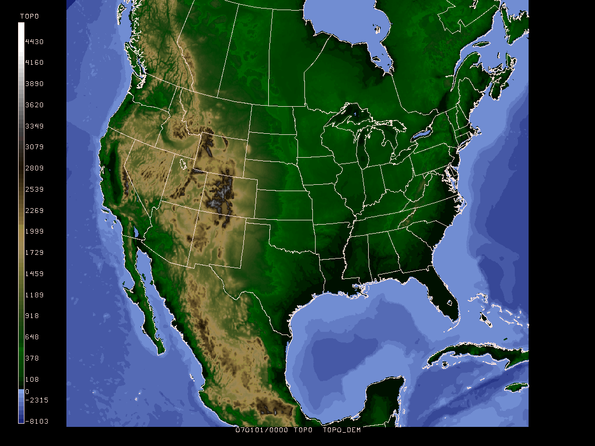
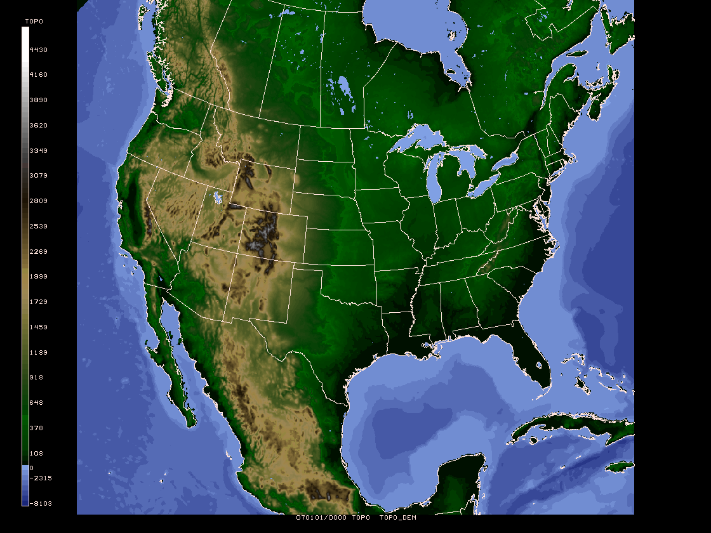

Data Used
GDFILE = nam_basemap.gem
GAREA = 10;-140;65;-40
GDATTIM = 070101/0000
GVCORD = none
GFUNC = topo
TOPOFL = dem5
IJSKIP = 0
GEMPAK-GDTOPO>r
GDTOPO PARAMETERS:
Grid file: nam_basemap.gem
Topography file: /home/gempak/GEMPAK5.10.2/gempak/tables/unidata/world_topo.5min
GAREA: 10;-140;65;-40
Lower left corner: 10.0000 -140.0000
Upper right corner: 65.0000 -40.0000
Number of X/Y grid points: 1200 660
Number of Grid points: 792000
Minimum and Maximum values -8103.00 4700.00
GDATTIM = last
GDFILE = nam_basemap.gem
GLEVEL = 0
GVCORD = none
GFUNC = topo
SCALE = 0
PROJ = str/90;-97;0
GRDAREA = 15;-116;50;-51.95
KXKY = 1002;925
CPYFIL =
SATFIL = nam_basemap.gini
CALINFO = 99/3/TOPO,0,7,-8103,0;8,95,0,4700
WMOHDR = TICZ99/CHIZ/
GEMPAK-GD2IMG>r
TOPO TOPO_DEM5 0 94 11 4 1 upc_dem5.tbl
MAP = 1
GAREA = dset
PROJ = sat
SATFIL = nam_basemap.gini
LUTFIL = upc_dem5.tbl

The DEM topography/bathymetry data set used above provides elevation above and below sea level, however, it does not distinguish between land and water. The Great Lakes and Great Salt Lake represent areas above sea level that we might want to be the color of water, while Death Valley and the Salton Sea areas have areas below sea level that we would want to represent as land. If we used the 0.5 degree land/sea mask functions in GEMPAK, the boundary areas would be much coarser than the 6 Km resolution of the image product and appear blocky. We could use the land mask from one of the operational models, but to obtain the best reolution, we'll use a 1 Km (30 second) land classification data set.
GDFILE = landuse.gem
GAREA = 10;-140;65;-40
GDATTIM = 070101/0000
GVCORD = none
GFUNC = luse
TOPOFL = land1
IJSKIP = 5
GEMPAK-GDTOPO>
GDFILE = landuse.gem
GDOUTF = nam_basemap.gem
GFUNC = bool(sgt(luse,0))
GDATTIM = 070101/0000
GLEVEL = 0
GVCORD = none
GRDNAM = luse
GRDTYP = S
GPACK =
GRDHDR =
PROJ =
GRDAREA =
KXKY =
MAXGRD = 200
CPYFIL =
ANLYSS = 4/2;2;2;2
GEMPAK-GDDIAG>
GDATTIM = 070101/0000
GDFILE = nam_basemap.gem
GLEVEL = 0
GVCORD = none
GFUNC = miss(miss(miss(mask(slt(topo,0),slt(luse,.5)),mask(0,slt(luse,.5))),sgt(topo,0)),1)
SCALE = 0
PROJ = str/90;-97;0
GRDAREA = 15;-116;50;-51.95
KXKY = 1002;925
CPYFIL =
SATFIL = nam_topomap.gini
CALINFO = 99/3/TOPO,0,7,-8103,0;8,95,0,4700
WMOHDR = TICZ99/CHIZ/
GEMPAK-GD2IMG>
MAP = 1
GAREA = dset
PROJ = sat
SATFIL = nam_topomap.gini
LUTFIL = upc_dem5.tbl
